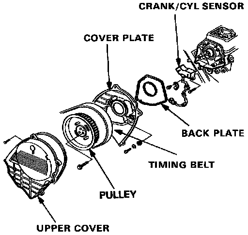
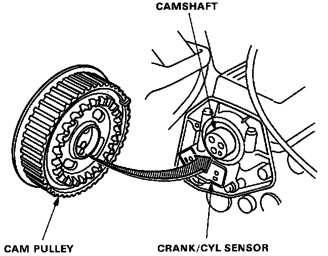

Crank/CYL Sensor
CRANK/CYL Sensor Replacement (Coupe)Removal:
1. Remove the cruise control actuator.
2. Remove the upper cover at the front side of the timing belt.
3. Remove the timing belt.

4. Remove 3 bolts and detach the pulley.
5. Remove 4 bolts and detach the front side cover plate of the timing belt.
Installation:
1. Install the CRANK/CYL sensor on the cylinder head.

2. Align the cam pulley pin with the camshaft hole to install the cam pulley.